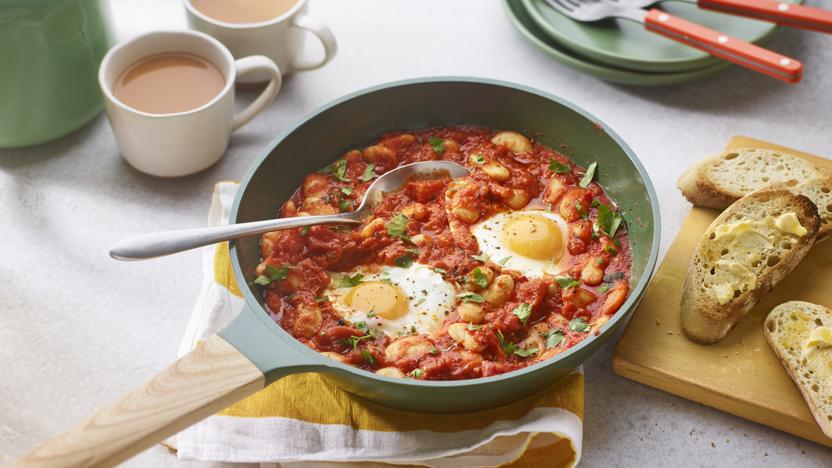

Butter Bean Recipe
Ingredients
- 2 tbsp olive oil
- 1 onion, finely chopped
- 2 garlic cloves, minced
- 1 red bell pepper, diced
- 1 tsp paprika
- 1/2 tsp cumin
- 1 can (400g) chopped tomatoes
- 1 can butter beans, drained
- Salt and pepper to taste
- 2-3 eggs
- Fresh parsley for garnish
- Bread slices, for serving
Preparation Steps
- Heat olive oil in a pan and sauté the onions and bell pepper until soft.
- Add garlic, paprika, and cumin; stir for a minute.
- Pour in chopped tomatoes and simmer for 8-10 minutes.
- Add butter beans, season with salt and pepper, and cook another 5 minutes.
- Make small wells and crack eggs into them.
- Cover and cook until eggs are set to your preference.
- Garnish with fresh parsley and serve with crusty buttered bread.